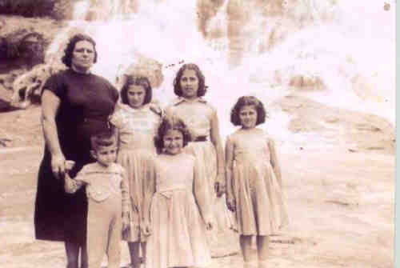
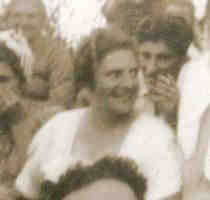
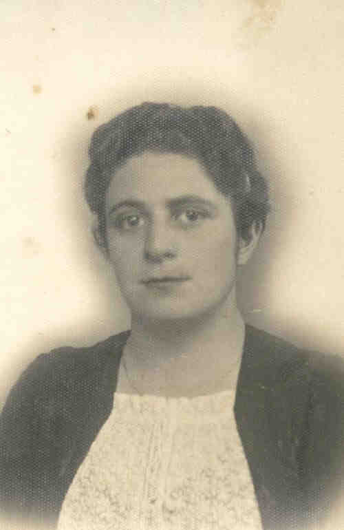
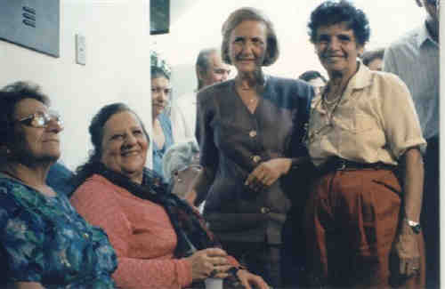
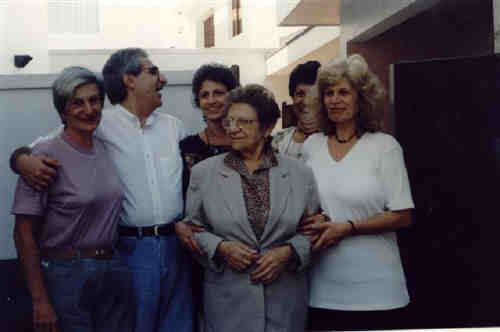

Oswaldina Petrella
- Nascida em: 16 Jan 1916, São Paulo, Sp
- Casamento: Emilio Vian em 20 Abr 1940 em São Paulo, Sp
- Falecido: 28 Fev 1998, São Paulo, Sp com 82 anos de idade

 Notas Gerais: Notas Gerais:
Oswaldina (Oswalda) nasceu em 16-01-1916, mas foi registrada no Cartório do Registro Civil da 18 a Zona - Moóca, em 21-01-1916.
Este cartório estava localizado na Rua Piratininga, esquina com a rua Visconde de Parnaíba. Esta rua era onde morava o avô Rocco com a família, quando vieram de Neca Junqueira.
Consta, na certidão de nascimento, que Oswaldina nasceu numa casa situada na rua do Oratório (Moóca).
A seguir, vamos transcrever o texto entregue ao Emílio Vieira, escrito pela sua tia Marlene Ferraz relatando fatos e particularidades vividas pelo casal Emílio Vian e Oswaldina Petrella.
-" A Marlene, minha tia querida, entregou este belíssimo texto (abaixo) para mim no dia dos pais.
emocionante...
A estória (história, na verdade) "tudo graças a um anel" é bem escrita, bem vivida e de emocionar."
TUDO GRAÇAS AO ANEL
Hoje, nos reunimos para agradecer a Deus por nossa família, por sermos irmãos e por sermos filhos do Emílio e da Osvalda , como também para resgatarmos etapas de nosso passado.
Como sabemos, o Carlos Vian iniciou este movimento, indo a Veneza em busca das raízes de nosso pai e compartilhou conosco, suas irmãs, dessa filiação.
Sabemos que nosso pai nasceu bem, apesar da guerra; estudou até a sétima série em colégio de padres e morou em casa confortável, até seus pais optarem pelo Brasil. Aí, momentos difíceis surgiram, foram morar por três anos na Fazenda de café Santa Neuza, na cidade de Chavantes, no interior de São Paulo, onde trabalhou, arduamente, no campo.
Ao retornarem a São Paulo conheceu a família Petrella, e passou a ser empregado de nosso avô, e depois, pretendente a mão da nossa mãe, mesmo encontrando muita resistência da família, que não aprovava esse casamento.
Gostaria de ressaltar que nosso pai foi um jovem amado pelo seu padrasto, Catarin Cervezato. Ele e a nona, Ângela, presentearam nosso pai com o anel de noivado dela, para que ele cumprisse o que se exigia de um noivo na época: anel de noivado, o vestido da noiva e a festa do casamento. Quando o vovô Cervezato faleceu já não possuía o capital que havia trazido da Itália, pois emprestou o dinheiro para o vovô Ercole.
Tempos depois, devido as crises que assolaram o bairro [6 meses de olaria alagada devido a um rompimento na Represa Billings e as dívidas acumuladas, foi feito um acerto de contas e nada restou , não sendo possível honrar os compromissos assumidos.
O papai foi então em busca de outros serviços e acabou trabalhando com os Rivelino, tornando a equilibrar seu orçamento.Trabalhou mais tarde na fábrica de fogões Cosmopolita, emprego arranjado pelos patrões da Tia Gema, pois era um homem forte para carregar e transportar as mercadorias.
Com o falecimento de Catarin, os gastos da casa da nona Ângela diminuíram e em um ano conseguiu casar-se com a sua VADA, deixando para a nona as despesas da festa e do vestido, não deixando de mencionar que suas irmãs ajudaram a pagar com seus salários de babás.A festa não contou com a presença dos Petrella, mas os amigos: Sr Agostinho, Sr Mendes e Sr Julinho Simões levaram o vovô Ercole, após beberem muito vinho .
Quando ele percebeu que estava na festa , se despediu. Penso que o vovô sentiu-se na obrigação de fazer uma festa para os seus parentes e fez, mas não convidou os noivos Emílio e Osvalda, que encontraram os convidados descendo a mesma rua que eles estavam subindo para ir ao teatro.
Com o nascimento da primeira neta Nadir, o vovô Ercole voltou a conversar com a filha. Tempos depois alugou a olaria para o genro. Para eles conseguirem pagar os aluguéis , a vovó Maria recebia e depois devolvia o dinheiro. Assim, para o vovô Ercole estava tudo certo e normal. Este é o início da escalada rumo ao sucesso.
Quando nosso pai faleceu em 1952, aos 42 anos, nos legou um terreno de 5000m no Real Parque, uma propriedade com mais de 3000m na Av. Morumbi, onde morávamos. Além disso, uma quantia considerável numa conta bancária ele sabia que a mãe de seus filhos teria que criá-los sem ele com o qual nossa mãe construiu um prédio com a ajuda do tio Antoninho e do tio Roque, para viver dessa renda, mas isso não foi suficiente, precisou costurar para cobrir os seus gastos.
Dessa forma, delegou para cada filho um dever doméstico, incluindo a Ciata e a Tina, que moravam conosco. Nem por isso precisou supervisionar nossos estudos. Fez todos estudarem música:a Nadir harmônica; Zenaide e Maria, piano e Marlene e Carlos, violino.
Fomos crescendo com características próprias. A Nadir, a mãezona, a Zenaide ,nossa alegria com suas artes e brincadeiras, carregou o Carlos com 2 anos no pescoço e subiu na goiabeira para que ele não tomasse injeção, para ele não chorar; a Marlene, que estudava com todos e assinava os boletins; a Maria, a Madoninha, a mais bonita e o Carlos, o demolidor, que tudo desmontava para saber como funcionava.
Crescemos sabendo que dependíamos de nosso próprio esforço. Para sobrevivermos tínhamos que ser bons, aí pintou uma competição legal, ferrenha e muito controle dos parentes. Essa competição era tanto no âmbito pessoal quanto entre nós, irmãos e entre os demais. A recompensa era a aceitação familiar. Nesse caminhar chegamos até aqui, acertando muito mais do que errando, pois temos famílias felizes, constituídas e estruturadas.
Dias atrás, na casa da Nadir, numa tarde de confraternização, a Maria, após uma linda oração, disse a nossa irmã que ela estava se livrando de tudo que a incomodava, que o que temos consciência e conhecemos nem sempre é somente aquilo que vemos, que o que tinha sido mal resolvido, não precisava estar mais lá. Pensando nisso e no que o nosso irmão nos contou de suas conversas com a Tia Gema, resolvemos visitá-la. Ela nos contou de sua infância, juventude, suas mágoas e alegrias, do amor que seu pai Catarin tinha pelo enteado e de como, num gesto de gratidão, deu o anel de noivado da nona para ele presentear a sua noiva e como uma jóia dos Cervezato acabou na família Vian.
Maria e eu passamos para a Maria Inês e o Carlos o que a Tia Gema nos contou e eles resolveram devolver o anel após 68 anos, e por essa razão resolvi escrever estes relatos.
As filhas do primeiro casamento de Ângela e Carlos Vian foram Elisa e Gema (falecida na Itália), e do segundo casamento com Catarin foram Maria e Gema. Todas elas eram trabalhadoras, limpas e ótimas em trabalhos manuais como crochê, tricô e costura.
A que mais esteve presente em nossas vidas foi a Tia Elisa que adorava o Silvio Santos e dava boas gargalhadas. Era a porta voz da família, tudo que sabíamos era relatado por ela.
Fiquei muito feliz ao saber que meu pai foi um jovem amado pelo seu padrasto, que tinha o Emilio como o filho varão que não teve em seu casamento. Ele, o Catarin, foi o único f ilho entre 6 mulheres e moravam na mesma casa 60 pessoas, por essa razão vendeu sua parte para as irmãs e foi viver com a sua viúva criando gado leiteiro. Após uma mudança no zoneamento, sua propriedade deixou de ser área rural e não tendo como reconstruí-la em outro local, vendeu tudo e vieram para o Brasil.
A nona, Vovó Ângela, gostava de beber cerveja com o filho e fazer bigodinho pra gente rir, era também muito elegante, distinta e bonita, um exemplo de mulher forte.Viu seu primeiro marido morrer com uma perna gangrenada, perdeu sua filha Gemma na Itália que morreu no caminho do médico e para ser enterrada em sua cidade voltou com ela nos braços ao lado do marido sem contar para ninguém.
Aqui no Brasil morou sem conforto, trabalhou na roça, perdeu todo o patrimônio e no final tricotava meias para vender. Quando seu filho morreu perguntava a Deus porque ele e não ela já que ele tinha que criar 5 filhos. Foi sempre cuidada pelo nosso pai e a mama continuou depositando uma mesada para ela até seu falecimento.
Muitas vezes pensamos em como, onde e no que gastamos nossas vidas nas questões da Família, de Deus e do mundo que nos cerca, será que Deus se importa conosco?
Tenho a certeza que sim, pois se para nós foi importante sabermos que fomos amados por nossos pais terrenos que dirá sabermos que somos amados pelo PAI que nos criou e que está conosco todos os momentos tristes ou alegres.
Nesta certeza agradeço a União que sempre esteve presente no lar de nossa mãe e a Compreensão que tivemos que adquirir quando tivemos que optar entre esse apego antigo e as nossas novas famílias, e as vezes que não soubemos lidar com isso e nos perdemos temporariamente nessa luta.
Mas hoje a maturidade nos leva ao tempo do perdão, da libertação das coisas tristes e antigas, das situações conhecidas e das que inconscientemente nortearam nossas vidas e tendo a certeza que Deus substituirá as coisas ruins pela boas para que saibamos ser melhores ou iguais a nossos pais.
Um exemplo que marcou bastante foi a palavra honrada de nosso pai que ao ver a indecisão dos padres em comprar uma parte de terreno de nossa casa, achou um novo comprador e fechou o negócio. O recibo foi feito em papel de pão. Os padres queriam que ele desfizesse o negócio e ele permaneceu fiel ao combinado mesmo perdendo dinheiro.
Ao meu ver ele não tinha tempo, precisava deixar sua esposa amparada, pois ela teria de criar os filhos viúva. Foi um bonito gesto de um pai provedor do futuro de seus filhos e esposa.
O outro foi de nossa mãe, sua honra, sua força, seu empenho em vencer, seu exemplo de dignidade, honestidade, caráter e luta, pois a recomendação médica após perder o marido era repouso absoluto podendo apenas guardar nas gavetas as roupas e ela enfrentou tudo trabalhando até de madrugada costurando e dormindo às vezes de 2 a 4 horas por noite para arrematar e entregara roupa no dia marcado.
A educação e os princípios que nos deram estão e estarão para sempre nas nossas vidas e tenho a certeza de que Deus o nosso outro Pai continuará nos guiando e nos abençoando.
Acredito que nós os filhos da Vada e do Emílio, o homem mais bonito do Brooklin, junto com os nossos maridos e a Maria Inês, e nossos filhos estamos saindo desta reunião com a certeza que estamos fazendo o que eles gostariam que fizéssemos, nos confraternizando sempre com :
O vinho dos Vieira
A alegria dos Wollenweber
O x-salada dos Ferraz
A sensibilidade e amabilidade dos Albrecht
E a chefia da clã, pelos Vian, que iniciou esta busca e que continua aberta para quem quiser completá-la.
Beijos e mais beijos para todos Nós
Filhos do Emilio e da Osvalda
Eventos notáveis em Sua vida foram:

(Clique na Foto para vê-la no Tamanho Original)")
• fotos: Oswaldina e Emílio - 1940.

(Clique na Foto para vê-la no Tamanho Original)")
• fotos: Emílio e Oswaldina - 1940.

(Clique na Foto para vê-la no Tamanho Original)")
• fotos: Oswaldina Petrella Vian.

(Clique na Foto para vê-la no Tamanho Original)")
• fotos: Emílio com a Nadir e Oswaldina com a Zenaide - 1944.

(Clique na Foto para vê-la no Tamanho Original)")
• fotos: Maria ~Marlene ~Carlos ~Oswaldina ~Nadir ~Zenaide.

• fotos: Oswaldina e filhos em Poços de Caldas.

• fotos: Detalhe Oswaldina de uma foto no Pic-nic.

• fotos: oswaldina_petrella.

• fotos: Oswaldina aniversário -80 anos.

• fotos: Oswaldina 80 anos com os filhos.
Oswaldina casad[:o::a] Emilio Vian, filho de Carlos Vian e Angela Carraro, em 20 Abr 1940 em São Paulo, Sp. (Emilio Vian nasceu em em 16 Nov 1909 em Spinea , Veneza, Itália e faleceu em 31 Mar 1952 em São Paulo, Sp.)
|


(Clique na Foto para vê-la no Tamanho Original)")